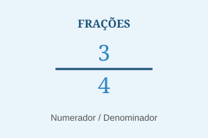
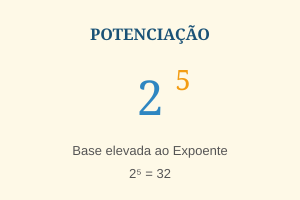
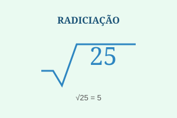
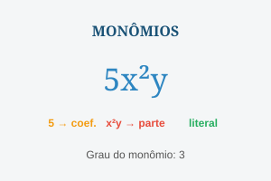
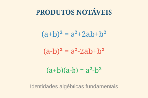
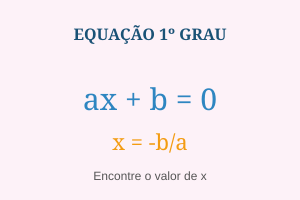

Revisão dos Conteúdos de Matemática
Este material reúne os principais conteúdos de matemática do Ensino Fundamental, com foco em frações, potenciação, radiciação, monômios, produtos notáveis e equações. Use este guia para revisar conceitos e resolver exercícios com mais confiança.
1. Frações
Uma fração representa uma parte de um todo. É escrita como a/b, onde a é o numerador (parte que se tem) e b é o denominador (total de partes iguais), sendo b ≠ 0.
Para somar ou subtrair frações, é preciso que tenham o mesmo denominador (denominador comum). Para multiplicar, multiplicamos numerador com numerador e denominador com denominador. Para dividir, multiplicamos a primeira fração pelo inverso da segunda.

2. Potenciação
A potenciação é a operação de multiplicar um número (base) por ele mesmo um certo número de vezes (expoente). O resultado é chamado de potência.
Algumas propriedades importantes: todo número elevado a zero é igual a 1; todo número elevado a 1 é ele mesmo; para multiplicar potências de mesma base, somamos os expoentes; para dividir, subtraímos os expoentes.

3. Radiciação
A radiciação é a operação inversa da potenciação. Calcular a raiz enésima de um número significa encontrar outro número que, elevado ao índice da raiz, resulte no radicando.
A raiz quadrada (índice 2) é a mais comum. Números que possuem raiz quadrada exata são chamados de quadrados perfeitos (ex: 4, 9, 16, 25, 36...).
4. Monômios
Um monômio é uma expressão algébrica formada por um único termo, que é o produto de um coeficiente numérico pela parte literal (letras com expoentes naturais). Exemplos: 5x², 3ab, -7x³y².
O grau de um monômio é a soma dos expoentes das variáveis. Dois monômios são semelhantes quando têm a mesma parte literal — só esses podem ser somados ou subtraídos diretamente.
| Monômio | Coeficiente | Parte Literal | Grau |
|---|---|---|---|
| 5x² | 5 | x² | 2 |
| -3ab | -3 | ab | 2 |
| 7x³y² | 7 | x³y² | 5 |
| -2xyz | -2 | xyz | 3 |
5. Produtos Notáveis
Produtos notáveis são identidades algébricas tão frequentes que valem a pena memorizar. Eles permitem desenvolver e fatorar expressões com rapidez, sem precisar fazer a multiplicação completa toda vez.
As três principais identidades notáveis são o quadrado da soma, o quadrado da diferença e o produto da soma pela diferença (diferença de quadrados).
Quadrado da soma: (a + b)² = a² + 2ab + b²
Quadrado da diferença: (a − b)² = a² − 2ab + b²
Produto da soma pela diferença: (a + b)(a − b) = a² − b²
6. Equação do 1º Grau
Uma equação do 1º grau com uma incógnita tem a forma ax + b = 0, com a ≠ 0. A solução (ou raiz) é o valor de x que torna a equação verdadeira. Para resolvê-la, isolamos x em um lado da equação.
A regra principal é: o que fazemos em um lado da equação, devemos fazer no outro também, para manter o equilíbrio. Podemos somar, subtrair, multiplicar ou dividir ambos os lados pelo mesmo valor.
3x = 6 → x = 6 ÷ 3 → x = 2
Exemplo com sistema: x + y = 5 e x − y = 1
Somando: 2x = 6 → x = 3 | Então: y = 5 − 3 = 2
Exercícios
Resolva os exercícios abaixo utilizando os conteúdos revisados anteriormente.
Frações
- Calcule: 1/2 + 1/4
- Calcule: 3/5 × 2/3
- Calcule: 4/5 ÷ 2/5
Potenciação
- Calcule: 2³
- Calcule: 5²
- Resolva: 10⁰
Radiciação
- Calcule: √49
- Calcule: √81
- Calcule: ∛27
Monômios
- Qual é o coeficiente do monômio 7x²?
- Qual é o grau do monômio 3x²y³?
Produtos Notáveis
- Desenvolva: (a + b)²
- Desenvolva: (x − y)²
Equações
- Resolva: x + 5 = 12
- Resolva: 2x = 18
- Resolva: 3x − 9 = 0
Gabarito
- 3/4
- 6/15 = 2/5
- 2
- 8
- 25
- 1
- 7
- 9
- 3
- 7
- 5
- a² + 2ab + b²
- x² − 2xy + y²
- x = 7
- x = 9
- x = 3
Galeria — Resumo Visual dos Conteúdos
A seguir, um resumo visual dos principais conteúdos abordados neste material. Cada cartão representa um tema e pode ser usado como referência rápida durante os estudos.
Frações
Potenciação

Radiciação

Monômios

Produtos Notáveis

Equação 1º Grau
Referências
- DANTE, Luiz Roberto. Matemática: contexto e aplicações. São Paulo: Ática, 2015.
- SMOLE, Kátia Stocco; DINIZ, Maria Ignez. Matemática: ensino médio. São Paulo: Saraiva, 2013.
- Material de revisão fornecido pela professora: Eliza — IFRS, 2025/2026.
- Imagens: produzidas pelo autor com SVG. Licença livre para uso educacional.